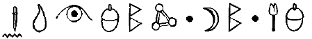

TARA
Artemis, St Bartleby’ye dönüyordu. Helsinki sağlık hizmetleri, Foaly’nin hazırlamış olduğu pasaportla babasının kimliğini saptadıklarında, onun orada olması gerekiyordu.
Holly yaralıyı iyileştirmek için elinden geleni yapmış tı, göğsündeki yarayı iyileştirmiş, hatta kör olan gözüne yeniden görme yetisi bile kazandırmıştı. Ama bacağı yerine takmak için artık çok geçti, zaten ortalarda bir bacak da yoktu. Büyük Artemis’in uzun süreli bir tedaviye ihtiyacı vardı ve bunun mantıklı bir açıklaması yapılabilecek bir yerden başlaması gerekiyordu. Bu yüzden Holly güney batıya doğru uçup Helsinki’ye vardı ve baygın adamcağızı Üniversite Hastanesinin kapısına bıraktı. Kapıcılardan biri uçan hastayı gördü ama hafızası başarıyla silindi.
Büyük Artemis kendine geldiğinde, şu son iki yılı hayal meyal anımsayacaktı ve en son aklında kalan şey mutlu bir anı olacaktı: Dublin limanında ailesiyle vedalaşması. Bu yine Foaly ve onun hafıza-silme teknolojisi sayesindeydi.
“Neden senin yanına taşınmıyorum?” dedi sentor, Polis Plaza’ya döndüklerinde şakayla karışık. “Ben iş yaparken sen de ütüyü halledersin.”
Artemis gülümsedi. Son zamanlarda bunu sıkça yapmaya başlamıştı. Holly’yle vedalaşması bile umduğundan iyi geçmişti, özellikle de Holly’nin Artemis’in öz babasını vurmasına tanık olması göz önüne alınırsa. Artemis’in tüyleri ürperdi. Bu özel strateji onu geceler boyu uykusuz bırakmıştı.
Yüzbaşı, Tara’ya kadar onlara eşlik etmiş ve onları sanal bir çitten geçirmişti. Hatta orada insanlara doğal bir görüntü sergilemek için sanal çimenlerde otlayan, sanal bir inek bile vardı.
Artemis’in üzerinde Peri Halkının teknolojisi sayesinde akıl almaz biçimde onarılmış olan okul forması vardı. Yakasını kokladı.
“Cekette değişik bir koku var,” diye belirtti. “Kötü değil ama değişik.”
“Ceketin tertemiz oldu,” dedi Holly, gülümseyerek. “Foaly onu makinede üç farklı devirden geçirmek zorunda kaldı, şeylerden arındırmak için...”
“Çamur Adamlardan arındırmak için,” diye tamamladı Artemis.
“Kesinlikle.”
Gökteki dolunay parlak ve bir golf topu kadar pürüzlüydü. Holly büyüsünün kendisine şarkılar fısıldadığını hissetti.
“Foaly, bize göstermiş olduğun yardımlardan dolayı Fowl Malikânesini sürekli gözetim altında tutacağını söyledi.”
“Bunu bilmek güzel,” dedi Artemis.
“Bu doğru bir karar mı?”
Artemis düşündü. “Evet. Artık Peri Halkına bir zarar vermeyeceğim. ”
“Güzel. Çünkü Konseyin büyük bir bölümü hafızanı silme taraftarıydı. Ve böylesine büyük bir hafızayla, IQ’un birazcık düşebilirdi.”
Kâhya elini uzattı. “Pekala, Yüzbaşı. Seni bir daha görebileceğimi sanmıyorum.”
Holly, Kâhya’nın elini sıktı. “Eğer görürsen, artık çok geç olmuş olur.” Yüzbaşı Short peri kalesine doğru döndü. “Gitsem iyi olacak. Birazdan güneş doğacak. Bir peri uydusuna kalkansız yakalanmak istemem. En son istediğim şey fotoğrafımın İnternette yayınlanması. Tam da Recon’daki görevime geri verilmişken.”
Kâhya patronunu dirseğiyle hafifçe dürttü.
“Ah, Holly... Yüzbaşı Short ha?” Ha mı? Artemis ha dediğine inanamıyordu. Bu bir sözcük bile değildi. “Evet, Çamur Ç... Evet, Artemis?”
Artemis, Holly’nin gözlerinin içine baktı, tıpkı Kâhya’nın kendisine öğretmiş olduğu gibi. Bu “medeni olma” işi her şeyden daha zordu. “Şey istiyordum... demek istediğim. Yani diyorum ki...”
Kâhya bir dirsek daha attı.
“Teşekkür ederim. Her şeyimi sana borçluyum. Sayende anne ve babama kavuştum. Ve mekiği uçurma tarzın kesinlikle harikaydı. Ve trende... Şey, senin bu yapıklarını, ben asla...”
Üçüncü bir dirsek geldi, bu kez söylediği saçmalıkları kesmek içindi.
“Affedersin. Her neyse, anlamışsındır.”
Holly’nin elflere özgü yüz hatlarında garip bir ifade belirdi. Utanmayla -bu olabilir miydi acaba?- sevinç arası bir şeydi. Çabucak kendini toparladı.
“Belki ben de sana bir şeyler borçluyum, insan,” dedi silahını çekerek. Kâhya tam tepki vermek üzereyken Holly’nin kötü bir şey yapamayacağına karar verdi.
Yüzbaşı Short kemerinden bir altın para çıkararak, onu yirmi metre havaya, ay ışığıyla aydınlanmış gökyüzüne doğru fırlattı. Sonra akıcı bir hareketle silahını yukarı doğrultup tek el ateş etti. Para yirmi metre daha yükselip dönerek yere indi. Nasıl olduysa Artemis onu havadayken yakalamayı başardı. Bu, delikanlılık hayatının ilk başarılı hareketiydi.
“İyi atış,” dedi Artemis. Az önce tek parça halindeki paranın ortasında artık küçük bir delik vardı.
Holly elini uzatıp parmağındaki henüz iyileşmemiş yarayı gösterdi. “Sen olmasaydın bu atışı asla başaramazdım. Hiçbir takma-parmak aslı gibi olmaz. Bu yüzden sanırım sana teşekkür etmem gerek.”
Artemis ona parayı uzattı.
“Hayır,” dedi Holly. “Sende kalsın, sana hatırlatsın diye.”
“Neyi hatırlatsın diye?”
Holly ona içten bir bakış atı. “Bu sinsiliğin derinliklerinde bir yerlerde, bir namus kıvılcımının yer aldığını hatırlatması için. Belki arada bir, bu kıvılcımı alevlendirebilirsin.”
Artemis parayı parmaklarının arasında içinde sıktı. Avucunun içinde paranın sıcaklığını hissetti. Evet, belki.
Başlarının üzerinde iki kişilik küçük bir uçak vızıldadı. Artemis başını göğe çevirdi. Bakışlarını yeniden yere çevirdiğinde Holly gitmişti. Çayırların üzerinden hafif bir duman çıktı.
“Elveda, Holly,” dedi yavaşça Artemis.
Bentley’in kontağı’ ilk çevirişte çalıştı. Bir saatten kısa süre içinde St Bartleby’nin ama kapısının önündeydiler.
“Telefonunu açık tut,” dedi Kâhya, kapıyı tutarak. Helsinki polisi kısa süre içinde İnterpol’den araştırma sonuçlarını almış olacak. Babanın dosyası merkezi işlem biriminde yeniden canlandırıldı, tabii ki yine Foaly’nin sayesinde.
Artemis telefonunun açık olup olmadığını kontrol ederken başını salladı. “Haberler gelmeden Annemle Juliet’in yerlerini saptamaya çalış. Onları bulmak için Fransa’nın güneyindeki tüm kaplıcaları aramak istemiyorum.”
“Peki, Artemis.”
“Ve hesaplarımın iyice gizlenmiş olduklarından emin ol. Babamın son iki senede yaptıklarımı tam olarak bilmesine gerek yok.”
Kâhya gülümsedi. “Peki Artemis.”
Artemis okulun kapısına doğru birkaç adım attı, sonra geriye döndü. “Ve Kâhya, son bir şey daha var. Kuzey Kutbundayken... ”
Artemis soruyu soramadı ama koruma nasıl olsa yanıtını biliyordu.
“Evet, Artemis,” dedi nazikçe. “Doğru olanı yaptın. Başka yolu yoktu.”
Artemis başını sallayıp Bentley caddenin sonunda gözden kayboluncaya kadar kapının yanında durdu. Şu andan itibaren yaşamı çok farklı olacaktı. Malikânede anne ve babasıyla birlikte yaşarken, çevireceği dolapları çok daha dikkatlice planlaması gerekecekti. Evet, Peri Halkını bir süre rahatsız etmemeye söz vermişti ama ya Mulch Diggums... bu farklı bir konuydu. Öylesine çok sayıda güvenli mekân ve öylesine kısıtlı zaman vardı ki.
DANIŞMANIN OFİSİ
ST BARTLEBY'S GENÇ BEYEFENDİLER OKULU
Doktor Po hâlâ St Bartleby’de çalışmayı sürdürmekle kalmamış, Artemis ayrıldığından beri daha da güçlenmiş görünüyordu. Öbür hastaları sınav stresinden ve kronik utangaçlıktan dolayı öfkesini kontrol edemeyen daha açık sözlü hastalardı. Ve üstelik hepsi de öğretmendi.
Artemis cep telefonunun düğmesine yanlışlıkla basmamaya özen göstererek kanepeye oturdu.
Doktor Po bilgisayarının karşısında başını salladı. “Müdür Guiney bana elektronik postanı iletti. Çok hoş.” “Bu konuda üzgünüm,” diye mırıldandı Artemis, kendini gerçekten de üzgün hissetmesine şaşırarak. Başkalarını üzmek genellikle onu üzmezdi. “Bir çelişki içindeydim. Bu yüzden kaygılarımı size yansıttım.”
Po hafifçe kıkırdadı. “Evet, çok güzel. Tam kitapta yazdığı gibi.”
“Biliyorum,” dedi Artemis. Gerçekten de biliyordu. Doktor F. Roy Dean Schlippe bu özel kitabın bölümlerinden birinin yazarıydı.
Doktor Po kalemini masanın üzerine bıraktı, bunu daha önce hiç yapmamıştı.
“Biliyor musun hâlâ çözümlemediğimiz bir konu var.” “Hangi konu bu, Doktor?”
“Son görüşmemizde değindiğimiz konu. Saygı hakkındaki.”
“Ah, o konu.”
Po parmaklarını kıvırdı. “Senin kadar zeki olduğumu farz edip bana dürüst bir yanıt vermeni istiyorum.” Artemis, Helsinki’de bir hastanede yatan babasını, ona yardım etmek için hayatını tehlikeye atan Yüzbaşı Holly Short’u ve tabii Koboi Laboratuarlarından çıkmalarını sağlayan Kâhya’yı düşündü. Bakışlarını kaldırınca, Doktor Po’nun ona gülümsediğini fark etti.
“Pekala genç adam saygınını hak edecek birini buldun mu?”
Artemis gülümsedi. “Evet,” dedi. “Sanırım buldum.”
Son